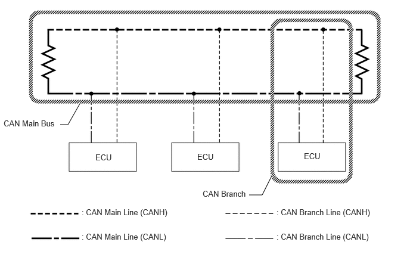

| Last Modified: 10-07-2025 | 6.11:8.1.0 | Doc ID: RM100000002GSC1 |
| Model Year Start: 2024 | Model: Tacoma | Prod Date Range: [12/2023 - ] |
| Title: NETWORKING: CAN COMMUNICATION SYSTEM (for Gasoline Model): SYSTEM DESCRIPTION; 2024 - 2026 MY Tacoma [12/2023 - ] | ||
SYSTEM DESCRIPTION
BRIEF DESCRIPTION
(a) The Controller Area Network (CAN) is a serial data communication system for real time application. It is a vehicle multiplex communication system which has a high communication speed and the ability to detect malfunctions.
(b) Using the CANH and CANL bus lines as a pair, CAN communication is performed using a voltage differential. (A base voltage is applied to the pair of lines and a voltage differential is created when communicating.)
(c) Many ECUs or sensors installed to the vehicle operate by sharing information and communicating with each other.
(d) 2 resistors which are necessary for communication are used in a CAN bus main line.

DEFINITION OF TERMS
(a) Central bus
(1) The central bus is a term used to describe all buses directly connected to the central gateway ECU (network gateway ECU).
HINT:
A bus is displayed as Bus on the "Communication Bus Check" screen of the GTS.
(b) Sub bus
(1) A sub bus is a bus that has a gateway function equipped ECU in order to communicate with the central bus and other sub buses.
HINT:
- A sub bus is displayed as Sub bus on the "Communication Bus Check" screen of the GTS.
- When Sub bus is selected on the "Communication Bus Check" screen, ECUs and sensors connected to non-CAN networks such as LIN may also be displayed in addition to the ECUs and sensors connected to sub buses in the CAN network.
(c) Local bus
(1) A local bus is a bus that does not have the ability to communicate with other buses. ECUs and sensors on a local bus can only communicate with other ECUs and sensors on the same bus.
NOTICE:
Gateway function not equipped ECU is a generic name for ECUs not connected to the central gateway ECU (network gateway ECU) with a gateway function.
(d) CAN J/C
(1) A CAN junction connector is a connector that connects branch lines to a main bus.
(e) Main bus
(1) A main bus line is the wire harness that runs between the 2 terminating resistors of a bus.
(f) Branch
(1) A branch line is a wire harness that connects an ECU or sensor to a main bus line.
(g) Terminating resistors
(1) Terminating resistors which maintain a stable signal inside the CAN bus are installed. 2 resistors of 120 Ω each located at each end of the bus are necessary.